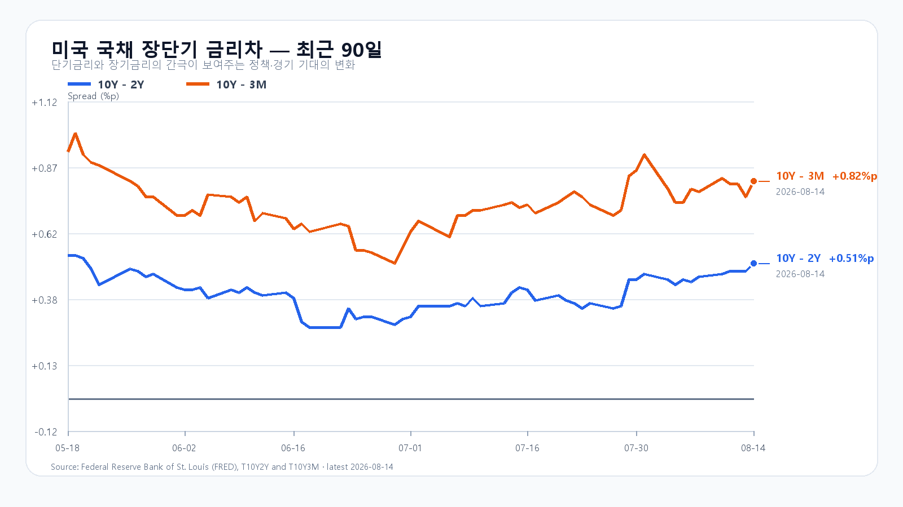
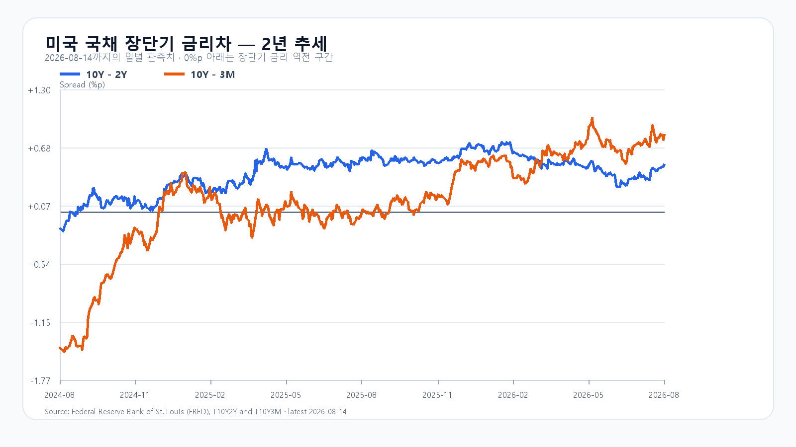

이번 주의 한 문장
이번 주 급등은 외국인 자금과 메모리 재평가가 함께 만든 상승이었습니다. 다음 주에는 7,000선을 넘는 순간보다 6,848 위에서 외국인 매수가 이어지는 시간이 더 중요합니다.
7,000선보다 강했던 것은 외국인과 시장 폭이었다
KOSPI는 8월 7일 6,258.77에서 14일 6,977.94로 11.49% 올랐습니다. KODEX 레버리지는 같은 기간 90,690원에서 113,525원으로 25.18% 상승했습니다. 금요일에는 7,010.86까지 오른 뒤 6,848.43까지 밀렸지만 종가는 다시 6,977.94로 올라섰습니다.
외국인은 금요일 KOSPI 현물을 3조387억원 순매수했습니다. 기관과 개인은 각각 1조298억원, 1조9,820억원 순매도했습니다. 프로그램은 차익 1,135억원 순매도, 비차익 1,604억원 순매수로 전체 469억원 순매수였습니다. 지수를 끌어올린 힘은 외국인 현물이었고 비차익 프로그램이 하단을 받쳤습니다.
상승 종목은 677개, 하락 종목은 204개였습니다. 삼성전자와 SK하이닉스가 각각 2.43%, 3.26% 오른 데 이어 현대차도 8.24% 상승했습니다. 대형 반도체 두 종목만 오른 장이 아니라 자금이 다른 대형주와 시장 전반으로 번졌습니다.
| 항목 | 8월 7일 | 8월 14일 | 주간 변화 |
|---|---|---|---|
| KOSPI | 6,258.77 | 6,977.94 | +11.49% |
| KODEX 레버리지 | 90,690원 | 113,525원 | +25.18% |
| 금요일 시장 폭 | 상승 677 · 하락 204 | 상승 확산 | |
미국 반도체는 올랐지만 같은 방향은 아니었다
미국에서 QQQ는 주간 1.11%, SOXX는 1.32%, SMH는 0.88% 올랐습니다. Micron은 10.72%, AMD는 6.42% 상승했고 Nvidia는 0.54% 오르는 데 그쳤습니다. Broadcom은 8.13% 하락했습니다.
금요일에도 AMD와 Micron은 각각 6.50%, 2.30% 올랐지만 Broadcom은 5.94% 내렸습니다. Applied Materials도 실적 기대를 넘지 못하면서 5.1% 하락했습니다. AI 투자라는 한 문장으로 모든 반도체를 묶을 수 없는 장입니다. 국내 시장에는 네트워크·장비보다 메모리 가격과 고객 주문이 더 직접적인 신호로 작용하고 있습니다.
메모리 가격은 주가의 중기 바닥을 받쳤다
TrendForce의 8월 14일 공개치에서 DDR5 16Gb 4800/5600 현물 평균은 52.733달러로 0.06%, DDR4 16Gb 3200은 88.207달러로 0.56% 올랐습니다. DDR4 8Gb 3200도 0.25% 상승했습니다.
서버 수요가 범용 제품의 생산 여력을 밀어내는 구조와 공급자의 가격 협상력은 유지되고 있습니다. 다만 KOSPI가 한 주에 11.49%, KODEX 레버리지가 25.18% 오른 뒤에는 현물 가격 상승만으로 다음 주 속도를 설명할 수 없습니다. 실물 업황은 중기 이익을 받치고, 단기 주가는 외국인 매수의 지속성과 7,000선 위의 시장 폭이 결정합니다.
소비는 약했고 유가와 장기금리는 높았다
미국 7월 소매판매는 전월보다 0.6% 줄어 7,636억달러를 기록했습니다. 시장은 소비 둔화를 확인했지만 금요일 10년물 금리는 4.69%까지 올랐습니다. 브렌트유는 주간 6.03% 상승한 88.59달러, WTI는 5.40% 오른 82.40달러였습니다.
성장 둔화가 금리 하락으로 곧장 이어지지 않았습니다. 유가 상승과 물가 경계가 장기금리를 붙드는 조합입니다. 달러/원은 8월 15일 05:44 KST 1,418.50원이었습니다. 다음 주 반도체 밸류에이션에는 장단기 금리차보다 10년물의 절대 수준과 유가가 더 직접적인 부담입니다.


다음 주 첫 거래일은 화요일이다
8월 17일은 광복절 대체공휴일로 국내 증시가 쉽니다. 월요일 미국 시장까지 이틀치 변수가 화요일 시초가에 한꺼번에 반영될 수 있습니다. 시초가 방향을 그대로 추종하기보다 6,848 방어와 외국인 현물 수급을 먼저 확인해야 합니다.
| 시각 | 이벤트 | 확인할 것 |
|---|---|---|
| 8월 17일 | 광복절 대체공휴일 | 국내 증시 휴장 |
| 8월 18일 21:30 | 미국 수출입물가 | 유가·관세의 물가 전가 |
| 8월 18일 22:15 | 미국 산업생산·가동률 | 제조업과 설비투자 강도 |
| 8월 20일 03:00 | 7월 FOMC 의사록 | 물가·고용에 대한 위원들의 시각 |
| 8월 20일 21:30 | 미국 신규 실업수당 | 고용 둔화 속도 |
다음 주는 7,000선의 자격을 시험한다
7,000선 안착을 시도하며 급등분을 소화합니다. 6,848을 지키면 7,011을 다시 시험합니다.
미국 메모리 강세와 외국인 현물 매수가 이어지고 10년물이 4.6% 아래로 내려오는 경우입니다.
유가·달러가 오르고 외국인이 현물 순매도로 돌아서며 6,748을 회복하지 못하는 경우입니다.
KODEX 레버리지는 109,740원과 106,415원을 지지선으로, 115,020원과 120,000원을 저항선으로 봅니다. 115,020원을 넘더라도 KOSPI 7,011 돌파와 외국인 현물 순매수가 동행하지 않으면 추격의 근거가 약합니다.
다음 주 판단은 공격 25점 · 관망 55점 · 방어 20점입니다.
자료 기준
한국 시세와 수급: Naver Finance. 미국 소매판매: 미국 인구조사국. 국채와 일정: 연방준비제도, 미 재무부, FRED. 메모리 가격: TrendForce. 국내 공휴일: 우주항공청 2026년 월력요항.